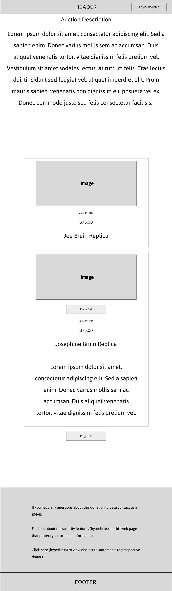

UCLA Live Auction Platform
Designing a first-of-its-kind in-house auction platform that eliminated third-party costs and kept 100% of proceeds at UCLA
Overview
UCLA relied on expensive third-party auction platforms that didn't meet the unique needs of UCLA fundraising, failed to integrate with UCLA's CRM and donor data, and siphoned a percentage of proceeds away from the university. The solution was to design and build a fully custom auction platform from the ground up — one that could compete with commercial platforms while being purpose-built for UCLA's fundraising ecosystem.
The Problem
- Third-party platforms were costly and took a cut of auction proceeds
- No integration with UCLA's private donor data and CRM systems
- Platforms didn't accommodate UCLA's unique fundraising requirements
- Donor data had to be manually transferred between UCLA and external platforms — creating friction and risk
- UCLA had no in-house auction capability — everything depended on outside vendors
My Role
Sole Product Designer and UX Designer on the project. Collaborated closely with the Product Manager, in-house developers, UCLA fundraising staff, and end users. Owned the full design process from initial research through launch — conducting user interviews, gathering requirements, creating low-fidelity wireframes for client approval, and producing high-fidelity annotated wireframes to guide front-end development. Later in the process, worked directly with front-end developers to fine-tune the UI to production quality.
Users
Two distinct user groups shaped the design direction:
Front-end (UCLA Donors): High-profile donors attending major UCLA fundraising events. Users range in technical ability and age — the experience needed to be intuitive enough for first-time users while supporting real-time competitive bidding on mobile devices.
Admin side (UCLA Fundraising Staff): Staff needed tools to configure auctions, manage items, set pricing, track bids in real time, process payments, and generate reports — all without relying on outside vendors.
Research & Process
The process began with a competitive analysis of existing third-party auction platforms to understand what the market offered and where the gaps were for UCLA's specific needs. Requirements gathering sessions with UCLA fundraising staff followed, surfacing the full complexity of their auction workflows. Low-fidelity wireframes were presented to clients for approval before moving to high-fidelity annotated wireframes that served as the development blueprint. Throughout the build, worked closely with front-end developers to ensure the final UI matched the intended design.
Early Wireframes

Early wireframes focused on establishing the core item browsing experience — how donors would scan items, see current bids, and take action. These were presented to UCLA fundraising staff for approval before moving to high-fidelity design.
Key Design Decisions
The central design challenge was keeping the interface clean and intuitive for donors — many of whom are high-profile individuals attending a live event — while accommodating the eclectic needs of UCLA fundraising. The platform had to support multiple transaction types simultaneously: live competitive bidding, fixed-price item purchases (buy-it-now), and outright donations — all within a single cohesive experience.
Designing clear visual hierarchy so users could instantly understand what type of item they were looking at, and what action to take, was critical to the success of the platform.
Key Screens


Platform Screenshots


What Shipped
A fully integrated, mobile-optimized live auction bidding platform launched at major UCLA fundraising events with hundreds of high-profile donors in attendance. The platform supports:
- Real-time competitive bidding with live updates
- Fixed-price item purchases alongside live auction items
- Outright donation capability integrated into the auction experience
- Full payment processing and collection
- Complete integration with UCLA's donor platform and single sign-on
- Direct connection to UCLA's data pipeline — no manual data transfers
- Mobile-optimized bidding experience for on-site and remote participants
Results
- UCLA fundraising clients no longer pay third-party platform fees — 100% of auction proceeds go directly to UCLA
- Eliminated the risk and friction of transferring donor data between UCLA and external platforms
- Platform is fully integrated with UCLA's CRM and donor data from day one
- Launched successfully at major UCLA fundraising events with hundreds of high-profile donors
- Replaced external vendor dependency with a fully owned, in-house platform
What I'd Do Differently
"The platform grew in complexity as we discovered more edge cases in UCLA's auction workflows. If I could do it again, I would have pushed for a more extensive discovery phase upfront — particularly more time with the fundraising staff to map out every transaction type and edge case before any wireframes were created."